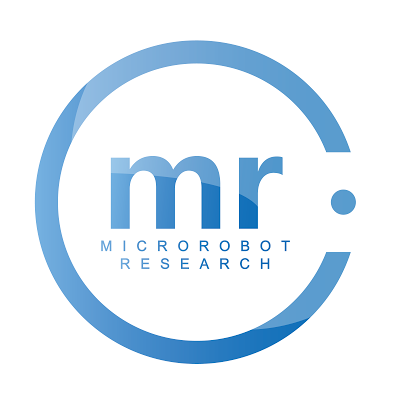

About 동아리 소개

Microrobot Research
카이스트에 왔으면 로봇 하나쯤은 만들어 봐야지!
안녕하세요, 로봇 동아리 MR(미스터)입니다. 저희는 다양한 종류의 로봇을 직접 만들고 연구하는 동아리입니다. 넓은 작업대와 많은 컴퓨터, 각종 공구에 3D프린터까지! 동아리방에 가득한 장비와 부품을 마음껏 사용하여 누구나 재미있게 로봇을 만들 수 있습니다.
MR는 매주 30분 정도의 정모를 가지며 격주로 서로의 로봇에 대한 지식을 나누는 세미나도 30분 정도 진행합니다. 또한, 신입 부원들은 주 1시간 정도의 기초 로봇 교육을 받습니다. 이외에 만들고 싶은 로봇이 있거나, 대회를 준비한다면 동아리방에서 자유롭게 로봇을 만들기도 합니다. 동아리방에 항상 갓갓선배들이 가득하니 언제든지 질문만 하면 즉시 해결된답니다. :)
MR는 로봇에 관심 있는 모든 학생을 환영합니다! 전공과 관련이 없어도, 로봇에 대한 지식이 없어도 로봇에 관심만 있다면 망설이지 말고 저희 동아리의 문을 두드려 주세요. 힘들게 카이스트까지 왔으니 멋진 로봇 하나 만들어 보자구요!